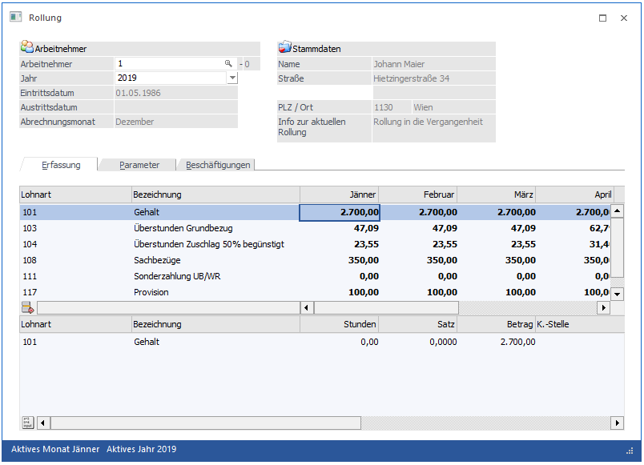
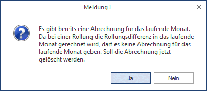
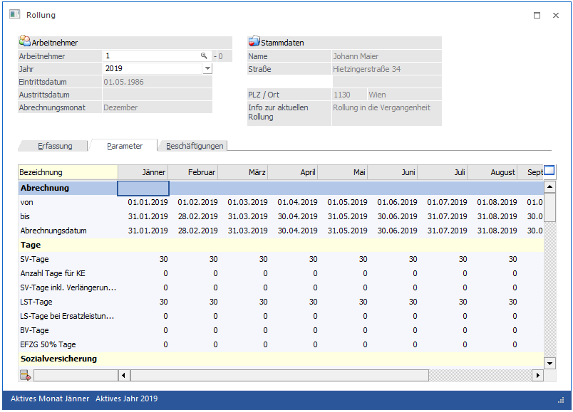
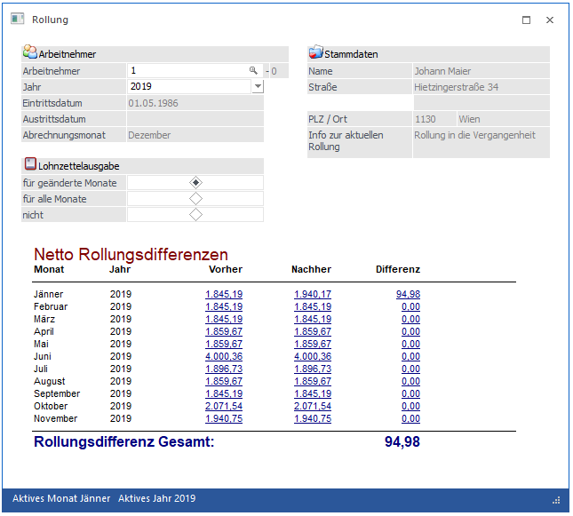
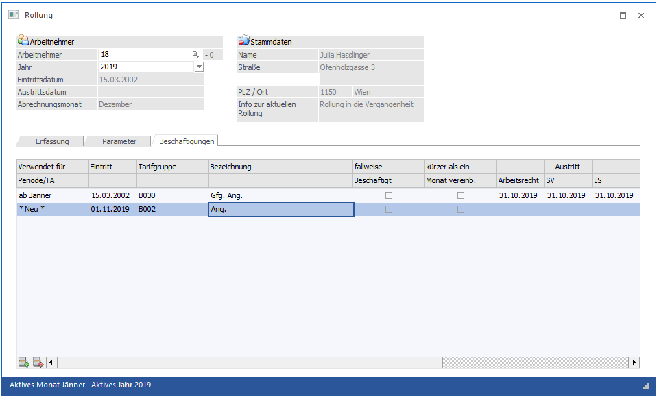
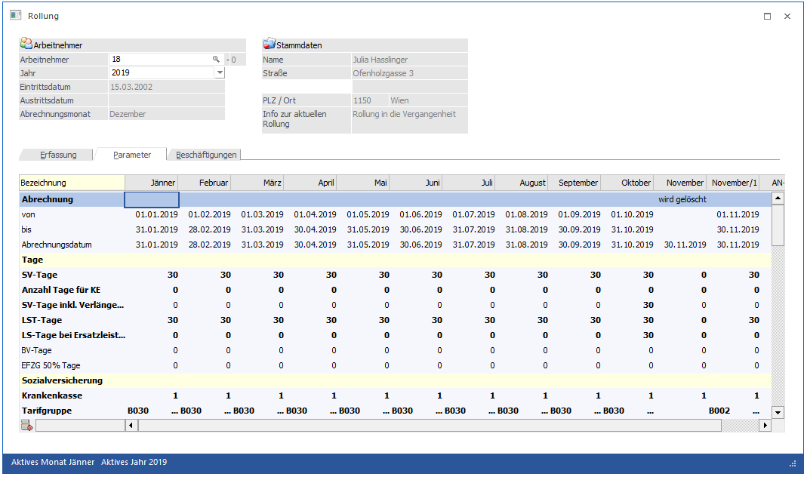

Die Rollung dient der Korrektur von Abrechnungsdaten bereits abgeschlossener Abrechnungsperioden. Die häufigsten Anwendungsfälle von Bezugs-Aufrollungen sind
ü Richtigstellung von Abrechnungsfehlern bzw.
ü rückwirkende Gehaltsänderung (z.B. Kollektivvertrag)
Alle mit der Bezugsaufrollung verbundenen Arbeiten werden im Programmpunkt
1 Abrechnen
1 Rollung
oder Schnellaufruf
1 STRG + R
durchgeführt.
Beispiel für eine Rollung ohne Änderungen in der Beschäftigung:
1. Schritt - AN auswählen
Nach Anwahl des Menüpunktes muss zuerst der AN ausgewählt werden, für den eine Rollung durchgeführt werden soll. Wie die AN-Nummer eingegeben werden kann, dazu gibt es mehrere Möglichkeiten. Details dazu entnehmen Sie bitte dem Kapitel Aufruf einer AN-Nummer.

Wurden für den AN SUB-AN angelegt (siehe auch Kapitel Wozu werden SUB-AN benötigt? und Sub-Arbeitnehmer), wird ein Fenster geöffnet, aus dem der gewünschte Arbeitnehmer bzw. SUB-AN gewählt werden kann.
Achtung:
Es ist darauf zu achten, dass noch keine Abrechnung für diesen AN in der laufenden Abrechnungsperiode durchgeführt wurde. Ist dies das Fall, wird die Meldung

angezeigt. Wird die Meldung mit JA bestätigt, wird die aktuelle Abrechnung gelöscht und es kann mit der Rollung fortgefahren werden.
Wird die Meldung hingegen mit NEIN bestätigt, kann für diesen AN keine Rollung gemacht werden.
Nach der AN-Nummer kann auch das Abrechnungsjahr gewählt werden, für das die Rollung durchgeführt wird. Standardmäßig wird das aktuelle Jahr vorgeschlagen. Sind für den AN Abrechnungen aus dem Vorjahr vorhanden, kann auch das Vorjahr ausgewählt werden.
Im oberen Teil des Fensters wird noch die Adresse des AN angezeigt.
Der untere Teil des Fensters ist in drei Register unterteilt:
ü Register Erfassen
In diesem
Fenster erfolgt die Eingabe bzw. Korrektur der Lohnarten.
ü Parameter
In diesem Fenster
werden alle Abrechnungsparameter, die im Zuge der Abrechnung geändert werden
können, angezeigt.
ü Beschäftigungen
In diesem
Fenster können die im Arbeitnehmerstamm hinterlegten Beschäftigungen geändert
werden.
2. Schritt - Register Erfassen - Lohnarten ändern
Die erste Tabelle beinhaltet alle für diesen AN abgerechneten Monate. Pro Monat werden die abgerechneten Lohnarten angezeigt - in den Monaten, wo eine Lohnart nicht verwendet wurde, bleibt der Abrechnungsbetrag auf 0. Monate, die noch nicht abgerechnet wurden bzw. wo der AN nicht im Betrieb war (abhängig vom Ein- und Austrittsdatum), werden auch nicht angezeigt.
In dieser Tabelle können auch neue Lohnarten hinzugefügt werden.
In der zweiten Tabelle können dann die Lohnarten, die in der ersten Tabelle selektiert worden sind, verändert werden.
Achtung:
Eine Lohnart kann erst dann verändert werden, wenn der Cursor auf dem Monat steht, in dem die Lohnart geändert werden soll.
Wenn in der ersten Tabelle eine Lohnart gewählt wurde, die geändert werden soll, so muss das entsprechende Monat gewählt werden. Dann kann man durch Drücken der TAB-Taste in die zweite Tabelle wechseln, wo die einzelnen Felder der Lohnart verändert werden können.
Im unteren rechten Teil des Fensters wird immer das Monat angezeigt, in dem Änderungen vorgenommen werden.
Befindet sich der Cursor in der 2. Tabelle auf einer Lohnart, so ist auch der "Formel-Button" aktiv - damit kann die Zeilenformel der Lohnart aufgerufen werden, die gerade bearbeitet wird.
Änderungen der Lohnart werden erst dann übernommen, wenn wieder in die erste Tabelle mit der Monatsübersicht zurück gewechselt wird.
3. Schritt - Register Parameter - Parameter verändern
In dieser Tabelle können alle Abrechnungsparameter, die für die Rollung von Bedeutung sind, verändert werden, wobei es für jedes Monat und jede Abrechnung eine eigene Spalte gibt.

4. Schritt - VOR-Button anwählen
Wenn alle Einstellungen bezüglich Lohnarten und Parameter durchgeführt wurden, muss der VOR-Button angewählt werden.
Durch Anklicken des VOR-Buttons kann das Ergebnis der Rollung kontrolliert werden. In einer Liste werden für alle Monate die Nettoauszahlungsbeträge vor und nach der Rollung angezeigt.
Durch Anklicken der Beträge, die unter Vorher bzw. Nachher angezeigt werden (die Beträge werden blau und unterstrichen dargestellt), kann der Abrechnungsbeleg der entsprechenden Abrechnung (die letzte bereits durchgeführte Abrechnung, oder die durch die Rollung veränderte Abrechnung) angesehen werden. Die Abrechnungsbelege für Vorher und Nachher werden in eigenen Fenstern geöffnet, sodass die Belege nebeneinander zum Vergleich aufgerufen werden können.
Zusätzlich dazu wird dann auch noch die jeweilige Differenz (Rollungsdifferenz) ausgewiesen. Der VOR-Button muss unbedingt angewählt werden - ansonsten kann keine Rollung durchgeführt werden.

Wenn das Rollungsergebnis angezeigt wird, können mehrere Aktionen durchgeführt werden:
ü Die jeweiligen Abrechnungsergebnisse Vorher und Nachher werden Blau und Unterstichen dargestellt. Das bedeutet, dass diese Werte angeklickt werden können - dadurch wird dann die jeweilige Abrechnung am Bildschirm dargestellt und damit kann auch noch eine Kontrolle der Rollung durchgeführt werden.
ü Die ausgewiesene Differenz wird Blau und Unterstichen dargestellt (auch wenn die Differenz 0 ist). Damit kann eine Differenzliste der ursprünglichen Abrechnung und der durch die Rollung veränderten Abrechnung angezeigt werden, wobei hier alle Werte (BMG's, SV, LST, Lohngruppenwerte etc.) tabellarisch dargestellt werden. Diese Möglichkeit gibt es auch, wenn z.B. solche Änderungen vorgenommen werden, die auf das Abrechnungsergebnis keine Auswirkungen haben (z.B. U-Bahn-Steuer, Änderungen von BMG's für DB, DZ oder dergleichen).
ü Weitere Änderungen durchführen, da
das Abrechnungsergebnis noch nicht richtig ist.
In diesem Fall muss der
Zurück-Button angeklickt werden. Dadurch gelangt man in das Fenster, in dem die
Lohnarten bzw. die Parameter geändert werden können.
ü Die Rollung durchführen.
In
diesem Fall muss nur die F5-Taste betätigt werden. Die Rollungen werden
durchgeführt und für jedes Monat, in dem Änderungen durchgeführt wurden, wird
ein Lohnzettel gedruckt.
Ø Lohnzettelausgabe
Über diese Option kann gesteuert werden, welche bzw. wie viele Abrechnungsbelege im Zuge der Rollung gedruckt werden sollen:
ü für geänderte Monate
Mit dieser
Einstellung werden nur die Abrechnungsbelege nochmals gedruckt, wo sich eine
Änderung ergeben hat.
ü für alle Monate
Mit dieser
Einstellung werden alle Abrechnungsbelege neu gedruckt.
ü Nicht
Es werden keine
Abrechnungsbelege gedruckt.
Buttons:
Ø OK
Durch Anklicken des OK-Buttons wird die Rollung durchgeführt. Dabei werden auch alle veränderten Erfassungszeilen gespeichert. Dazu werden die Ausdrucke gemäß Einstellungen durchgeführt. Mit der Rollung wird die Netto-Rollungsdifferenz in das Feld "Rollungsdifferenz" der aktuellen Abrechnung gestellt.
Hinweis:
Damit diese Rollungsdifferenz entsprechend berücksichtigt wird, muss in der aktuellen Periode eine Abrechnung durchgeführt werden. Ist der AN nicht mehr im Betrieb, dann muss zumindest eine 0-Abrechnung durchgeführt werden, damit die Rollungsdifferenz zur Auszahlung gelangen kann.
Ø Ende
Durch Anklicken des ENDE-Buttons wird das Fenster geschlossen und alle Änderungen werden rückgängig gemacht.
Ø Entfernen
Durch Anklicken des Entfernen-Buttons wird die gerade aktive Lohnart aus allen Monaten gelöscht. Dieser Button ist aber nur in dem Fenster, in dem die Lohnarten bearbeitet werden können, aktiv.
Hinweise für Rollungen in das Vorjahr:
Wenn eine Rollung für das Vorjahr durchgeführt wird, gibt es einige Punkte zu beachten:
Ø Rollungsdifferenz:
Die Rollungsdifferenz wird - wie bei allen Rollungen - in die aktuelle Abrechnungsperiode übernommen. Ist der AN ggf. nicht mehr im Betrieb, muss für diesen AN trotzdem eine Abrechnung (mit zumindest 1 Lohnart) durchgeführt werden, damit eine aufgetretene Rollungsdifferenz auch ausbezahlt wird.
Ø Auswertungen:
Für Rollungen ins Vorjahr werden bei der Auswertung der Abrechnung ebenfalls SV- und FIBU-Belege erzeugt, wobei auch hier die gleichen Einstellungen (einzeln oder kumuliert) vorgenommen werden können.
Buchungsstapel für das Vorjahr werden NICHT erzeugt, d.h. die Werte lt. FIBU-Rollung-Beleg müssen manuell in die entsprechende (gewünschte) Periode gebucht werden.
Ø Zur Zahlung freigeben:
Wenn bei der Auswertung der Abrechnung auch die Zahlungen freigegeben werden, dann werden für Rollungsdifferenzen aus dem Vorjahr die Zahlungen immer für den Dezember des Vorjahres erstellt.
Beispiel für eine Rollung der Beschäftigung:
In dem Beispiel wird angenommen, dass beim Arbeitnehmer übersehen wurde, dass dieser seit dem Vormonat vollbeschäftigt ist. Bisher wurde der Arbeitnehmer als geringfügiger Arbeitnehmer geführt.
1. Schritt: Arbeitnehmer auswählen
So wie bereits zuvor beschrieben, wird nach öffnen der Rollung der Arbeitnehmer ausgewählt. Im Anschluss wird in das Register Beschäftigungen gewechselt.
2. Schritt: Beschäftigungen korrigieren
Im Register Beschäftigungen werden alle im Arbeitnehmerstamm hinterlegten Beschäftigungen angezeigt. Alle Datumsfelder sowie die Tarifgruppe sind editierbar. Um eine neue Beschäftigungszeile anlegen zu können, muss die aktuell gültige mit einem Austrittsdatum/Änderungsdatum versehen werden:

3. Schritt - Parameter kontrollieren
Nachdem die Beschäftigungen editiert wurden, ist ein Wechsel in das Register Parameter erforderlich um zu kontrollieren, ob sich die Parameterwerte entsprechend der Änderungen in den Beschäftigungen geändert haben. Außerdem ist dort auch gleich ersichtlich, ob durch die Änderung in den Beschäftigungen neue Abrechnungen/Teilabrechnungen hinzugekommen sind, oder ob Abrechnungen gelöscht werden müssen.

4. Schritt: Erfassung durchführen
Nachdem die Parameter kontrolliert wurden, können im Register Erfassung die eventuell notwendigen Korrekturen der Erfassungszeilen vorgenommen werden, bzw. können die neu hinzugefügten Abrechnungen erfasst werden.
Alle weiteren Schritte sind wie bei der oben beschriebenen Rollung durchzuführen.